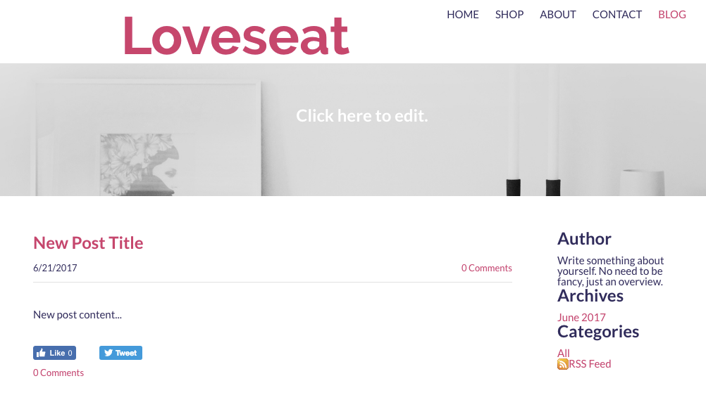
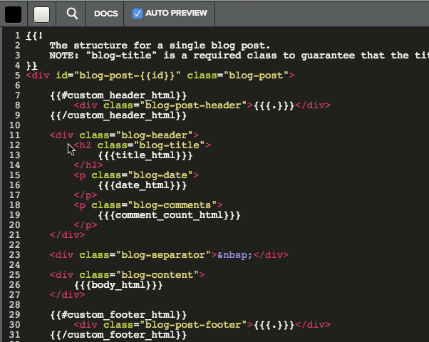

While templates (like the Header template we just customized) determine the layout of a page, partials determine the content that displays on the page. For example, blog posts use the blog post partial and it uses mustache tags to pull in content specifically needed to display blog posts. Partials are used throughout a Weebly site, and some pages are made up of a number of different partials. You can read more about partials here.
Let’s edit the blog post partial. Currently, it displays the date below the title.

Blog post partial by default has the date below the title.
Let’s switch the date to be above the title.
Tip: In order to see your changes, you need to create a blog post. Follow the instructions here
Now, let’s edit the partial.
If you’re in the Code Editor, click Save (or Cancel) to exit.
Click the Blog link on the page in the editor. Now the blog post page will display in the code editor so we can see our changes.
From the Theme tab, click Edit HTML/CSS.
Under the Partials directory, expand the blog section and click on post.tpl to open it.
Find the blog-title and blog-date entries. Copy the <h2> tag that contains the blog-title and move it below the <p> tag with the blog-date.

Move the date
Click Save.
The date and the title are now switched. Now let’s add a theme option that allows a user to change the width of the header.
What Just Happened?
You edited the partial used to display a blog post. By changing the order of the date and title of the post, every blog post that uses this theme will have this change.